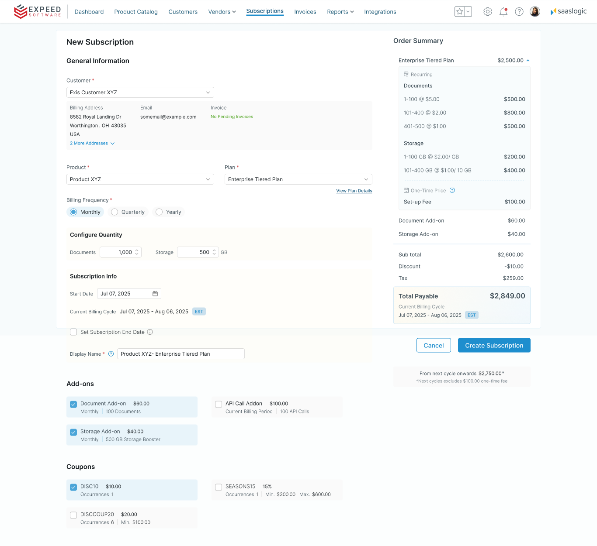
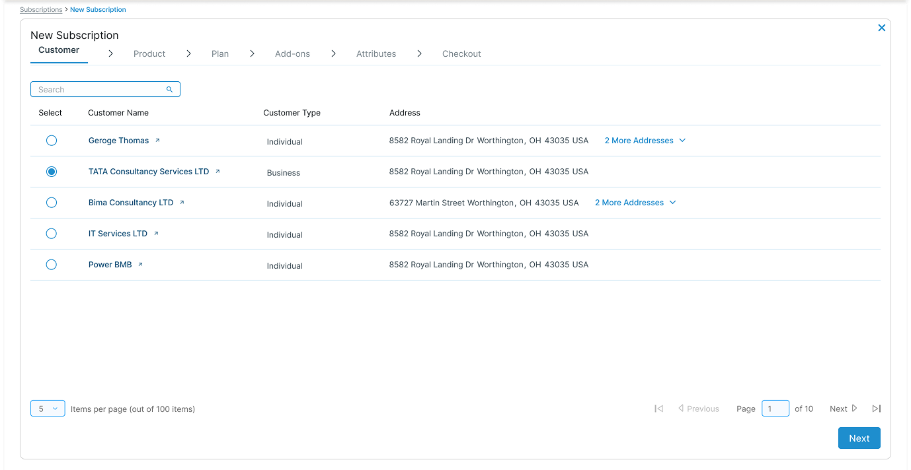
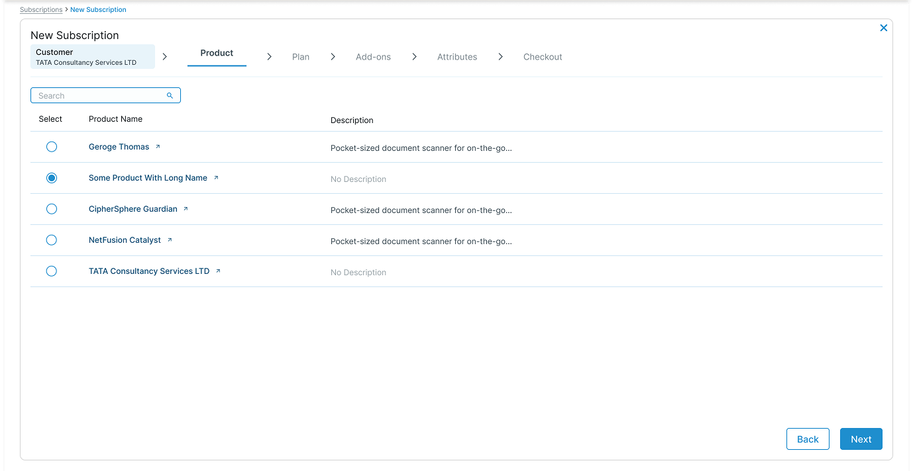
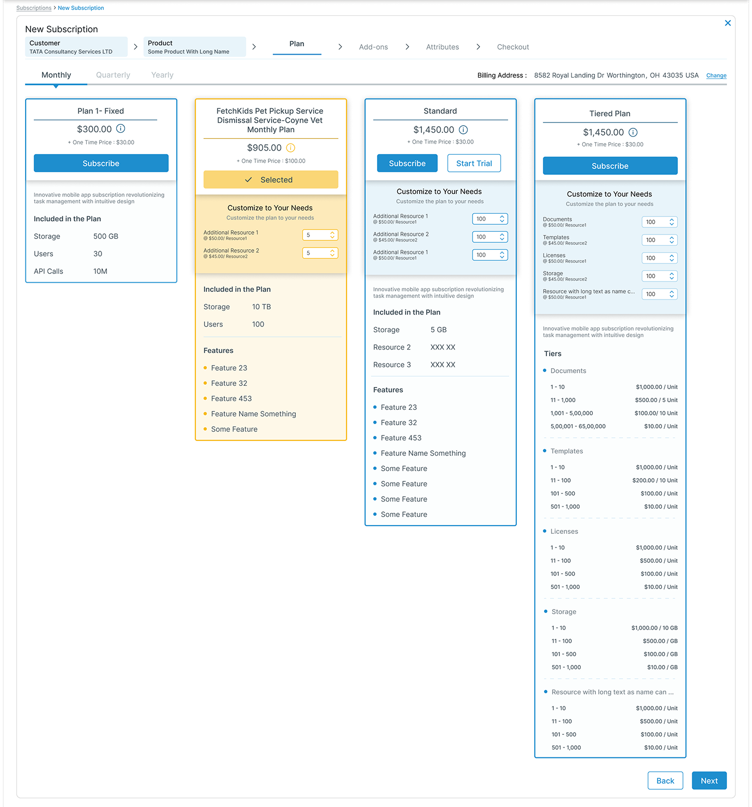
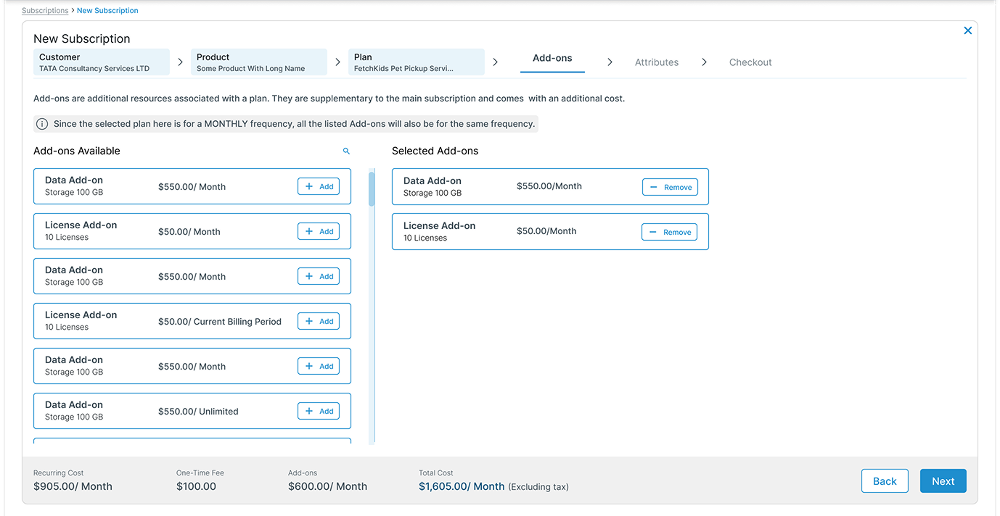
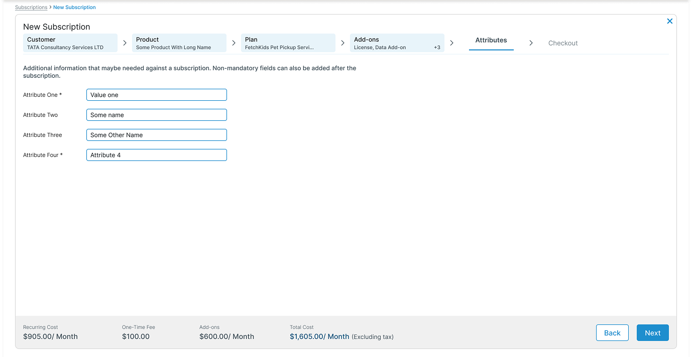
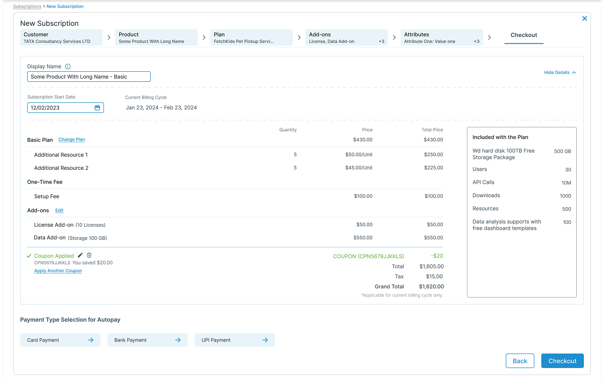
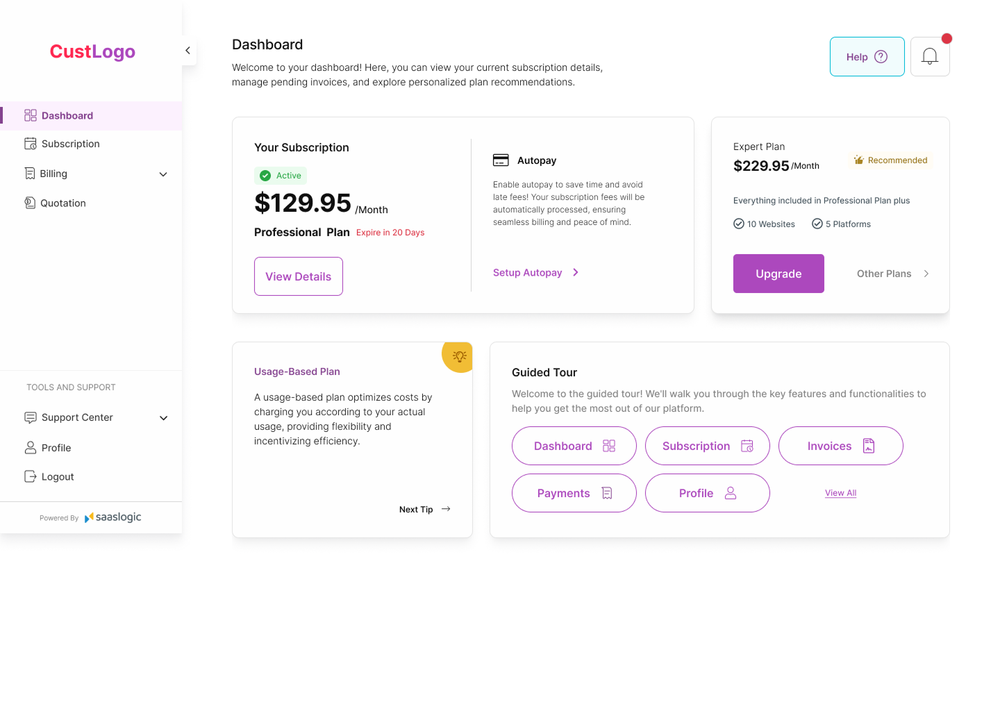
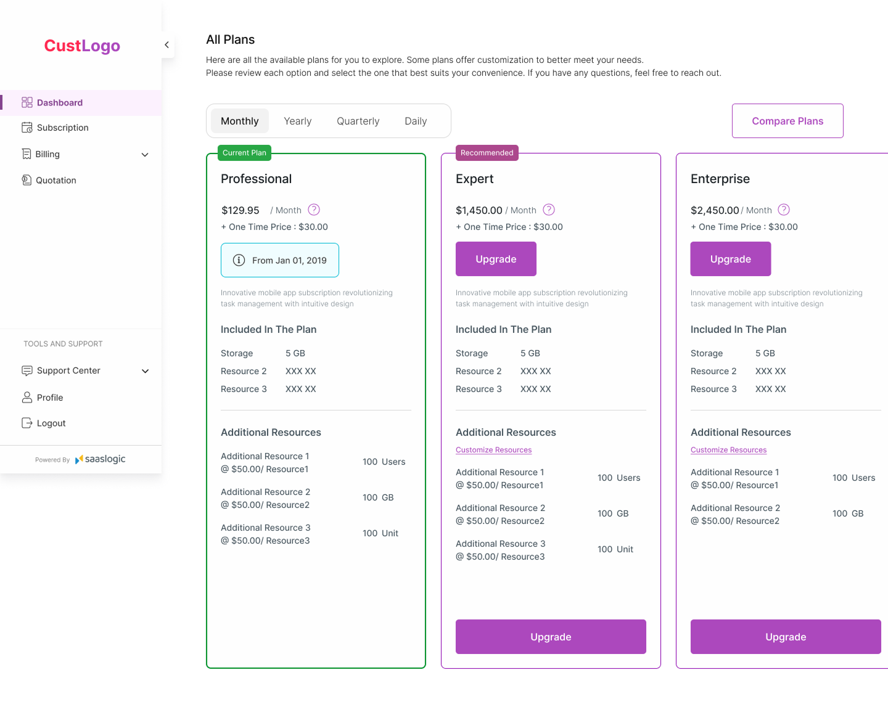
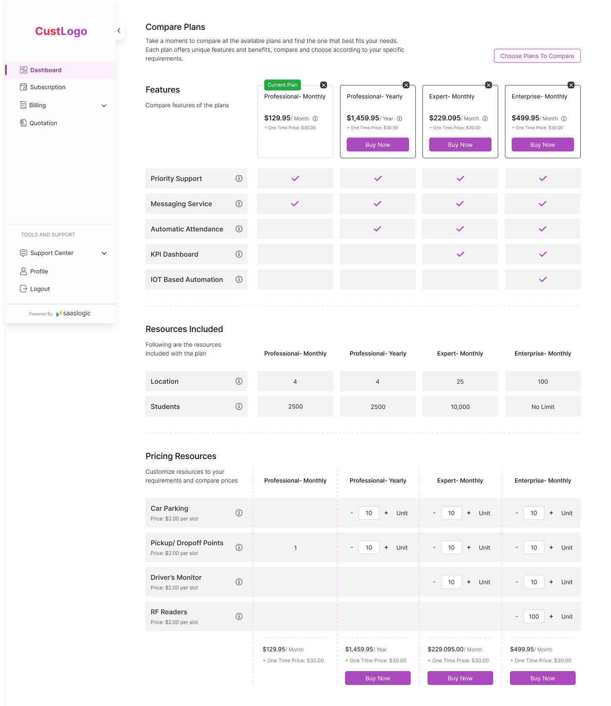

Case Study · SaaS · Workflow Design
Saaslogic — Subscription Workflow Redesign
Reduced a multi-step subscription process into a single-page workflow — cutting context switching and improving task efficiency for operational users
Final Design

- 1 Single-page workflow — entire subscription process available on one screen.
- 2 Persistent order summary — billing context stays visible while configuring.
- 3 Inline editing — modify products, plans and add-ons without navigating away.
- 4 Context preservation — users never lose their place while configuring subscriptions.
Final single-page subscription workflow designed to reduce navigation, preserve context, and help operational users complete subscription setup more efficiently.
Challenge
Operational users were losing time to the workflow itself
Customer success teams needed to complete subscription setup quickly, but the existing multi-step workflow required constant navigation and context switching.
- Multiple screens required to complete one subscription
- Workflow required users to move across multiple steps even for simple tasks
- Key information was distributed across steps, requiring users to navigate to access it
- Errors forced users to restart the entire process
Key Insight“Operational users preferred speed over guided steps.”
Initial Approach
The first design: a guided step-by-step flow
I initially designed a guided, progressive workflow based on common SaaS patterns — breaking the setup process into six sequential steps:






Plan comparison and Add-on dual-panel interactions were designed to support decision-making within each step.
Why It Didn’t Work
The flow worked for new users — not experienced ones
- Forced step-by-step progression slowed down experienced users
- Navigation between steps interrupted task flow
- Referencing or updating previous selections required additional navigation
- Progress indicators added little value for users familiar with the workflow
Design Shift
The pivot: from guided steps to everything in one place
Based on workflow feedback gathered by the Product Owner from customer success users, the workflow was redesigned into a single-page experience that allowed users to view and edit all selections in one place. The goal shifted from guiding users step-by-step to enabling faster task completion for experienced users.
Final Solution
One page. All context. Fully editable.
The redesigned workflow collapsed all six steps into a single page, giving users complete visibility and control without navigating away.
Multi-step Guided Flow
- Multiple steps required
- Linear progression only
- Limited visibility
Single-page Workflow
- All in one view
- Non-linear editing
- Full context visibility
Customer Portal — Upgrade Plan Experience
A different user type — a different approach
In addition to the internal workflow, I designed an upgrade experience for the customer portal to help users compare plans and make informed decisions. The focus here was on clarity and reducing confusion for users making less frequent decisions.

User views current subscription details

Available plans displayed with clear pricing

Feature comparison supports decision-making
- Clear plan comparison to support decision-making
- Highlighted key differences between plans
- Reduced visual clutter to avoid confusion
- Structured information for easy scanning
“Unlike internal users, customers needed guidance to understand options rather than speed to complete tasks.”
Outcome
A single-page workflow designed for experienced users
- Reduced navigation dependency for experienced users
- Improved visibility across workflow stages
- Enabled non-linear editing within a single workflow
- Preserved context while configuring subscriptions
- Established a workflow pattern extended to other admin experiences
Key Takeaways
What this project reinforced
Design for expertise level
→ Power users prioritize speed over guidance
Design from workflow feedback
→ Feedback gathered from users through the Product Owner helped reveal where the existing workflow created unnecessary friction
Challenge default patterns
→ Multi-step flows are not always optimal